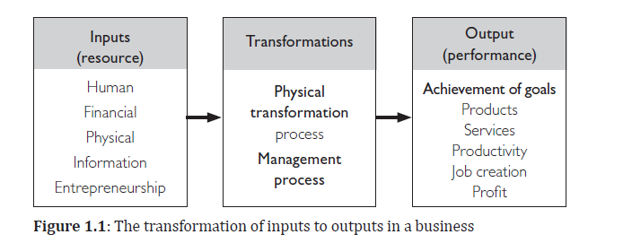

What is the key focus of business management? The answer to this question in South Africa is embedded in the free market system principle. In countries that function according to the free market system, business plays a key role in satisfying our multiple human needs. Management must combine the correct portions of the factors of production (entrepreneurship, natural resources, labour and capital) available to them to ensure the effectiveness and efficiency of the business, to make a profit and to satisfy society’s multiple needs.
The business world is a complex system of individuals and businesses, which, in a market economy, transforms limited resources (inputs) into products and services (outputs) in order to meet the unlimited needs and wants of people. These products and services are offered to the market in exchange for a profit.
Please find more information on the Juta site